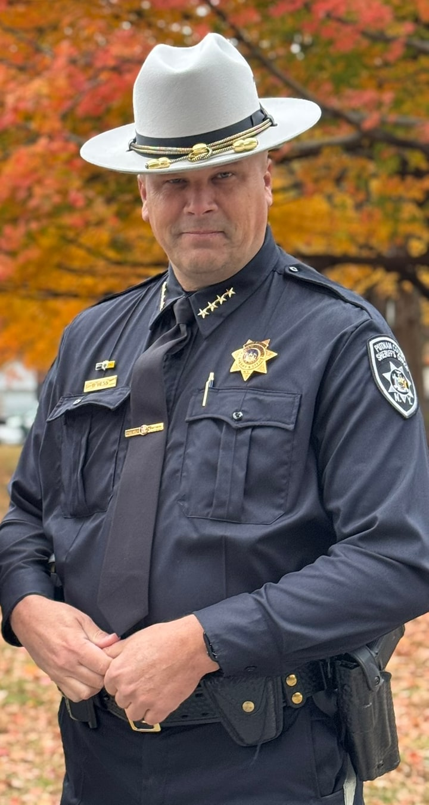
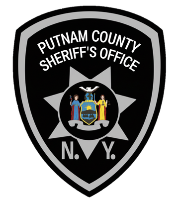
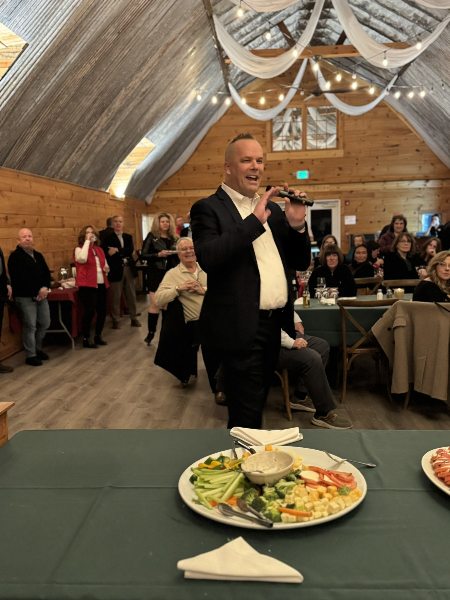
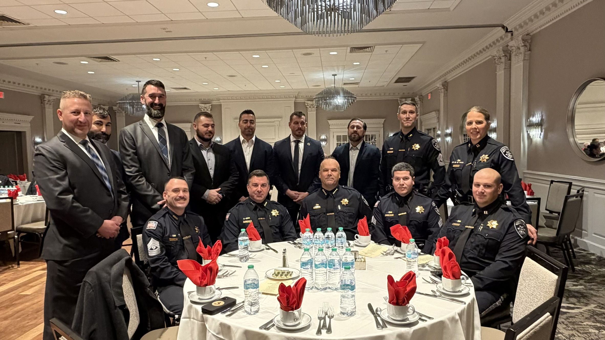
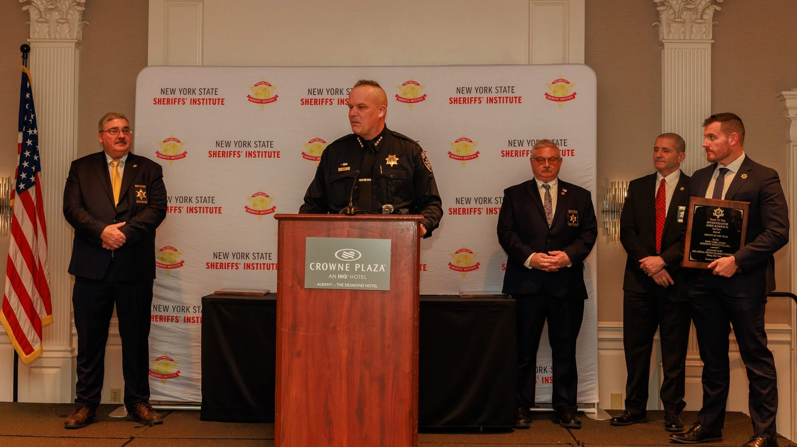
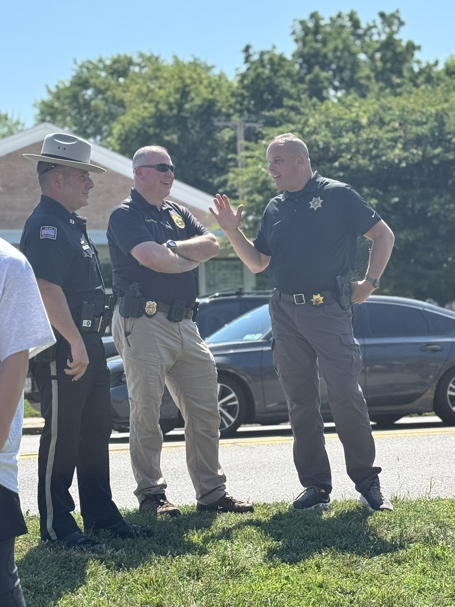
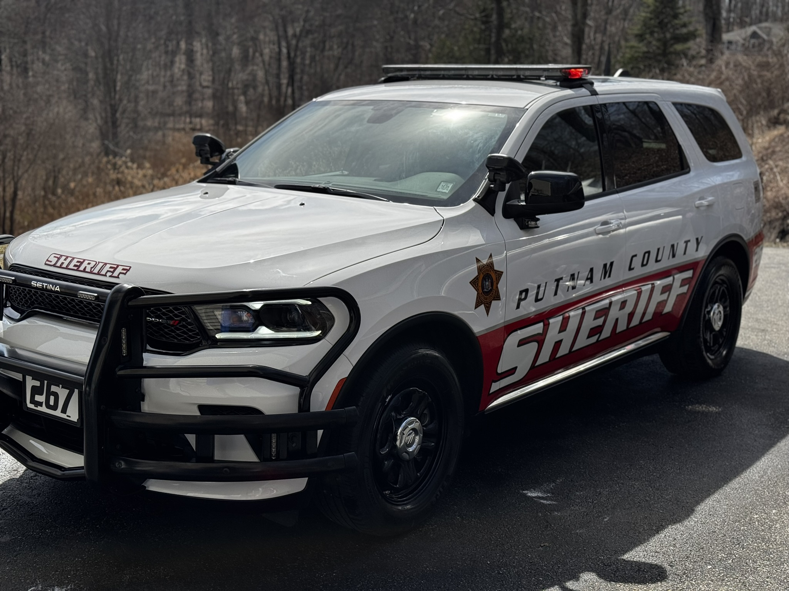

Community Safety
Supporting patrol, investigations, corrections, emergency response, and crime prevention with visible, accountable service.
Putnam County, New York
Serving Putnam County with integrity, professionalism, transparency, and a steady focus on community safety.


About Sheriff Hess
Brian M. Hess brings more than 25 years of law enforcement experience to the Putnam County Sheriff's Office. After serving as Undersheriff and Acting Sheriff, he was elected Putnam County Sheriff in November 2025.
Before joining the Sheriff's Office, Sheriff Hess served with the Westchester County Police Department, where he founded and commanded the Westchester-Putnam Real Time Crime Center. That work connected more than 65 law enforcement agencies and more than 5,500 vetted professionals for real-time intelligence sharing.
years in law enforcement
partner agencies connected
county high schools supported by the scholarship fund
Current Priorities
Supporting patrol, investigations, corrections, emergency response, and crime prevention with visible, accountable service.
Strengthening school partnerships, youth engagement, cadet development, and positive connections between deputies and students.
Using practical public safety technology, including real-time intelligence, cameras, and data-informed deployments.
Keeping communication open through community events, service reporting, public resources, and transparent leadership.
Community Resources
These official Sheriff Office resources help residents report concerns, request assistance, and stay connected.
New Initiative
The scholarship fund was created to recognize graduating seniors who demonstrate strong character, leadership, integrity, resilience, and a commitment to community.
Each year, one student from each Putnam County high school is selected to receive a $500 scholarship for college, university, trade school, or another accredited post-secondary program.
Updates
Community Event
Hundreds of community members visited the Sheriff's Office to meet deputies, see public safety equipment, and support the Brian Hess Scholarship Fund through event merchandise.
Public Safety
The Sheriff's Office has highlighted summer patrols and new Trailway security camera work with county partners to help keep residents safe outdoors.
Official Site
Follow official releases, reports, hiring information, and public safety alerts directly through the Putnam County Sheriff's Office website.
Read official updatesService in Photos





Contact
For official Sheriff Office business, records, reports, and public safety requests, use the official office channels.